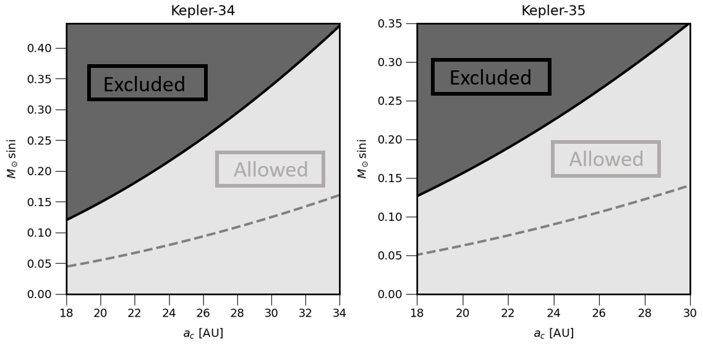

The Kepler Space Telescope was launced by NASA in 2009 to monitor ~ 150,000 stars in search of planets around sun-like stars using the transit method. The transit method relies on monitoring the light from a star to detect periodic dips in the brightness due to a planet passing in front of the star as seen from Earth. One of Kepler’s most exciting discoveries was the first confirmed transiting circumbinary planet (Kepler-16b) which is a planet that orbits two stars instead of one. Since then, nearly 14 circumbinary planets have been discovered from the Kepler photometry.
In addition to the transit method, the radial velocity method is a powerful technique for detecting exoplanets as well as providing constraints on stellar and planetary system architectures. It works by measuring the Doppler shift in a star's spectrum caused by the gravitational influence of an orbiting planet. As the planet and star orbit their common center of mass, the star moves slightly, producing periodic shifts in the wavelengths of its light.
Kepler-34 and Kepler-35 are circumbinary systems with transiting planets, first characterized in 2012. We have since collected additional spectra and radial velocity measurements for each star in these systems, extending the observational baseline to 10 years. This extended dataset enables us to search for potential substellar or stellar companions with orbital periods significantly longer than those of the circumbinary planets. Companions with orbital periods significantly longer than the baseline were searched for by modeling a constant acceleration acting on the barycenter (center of mass) of the binary. We estimated the uncertainty in our parameters with a Markov-Chain Monte Carlo analysis approach.
For Kepler-34, a tertiary $M_C \sin(i)$ upper limit ranges from 0.12 $M_\odot$ at an orbital distance of 18 AU to 0.44 $M_\odot$ at 34 AU from the barycenter of the stellar binary. For Kepler-35, a tertiary $M_C \sin(i)$ upper limit ranges from 0.13 $M_\odot$ at 18 AU to 0.35 $M_\odot$ at 30 AU from the barycenter of the stellar binary. This mass range corresponds to a M-dwarf type star.

Figure: Upper limits on a proposed companion in the Kepler-34 and Kepler-35 systems as a function of companion mass and semi-major axis. The dashed curve uses the mean $\dot{\gamma}$; the light region is the ±3σ interval.
The major factor limiting our ability to decrease the mass upper limit of long-period companions are errors in the RVs of order 0.1 km/s that arise from characterizing double-lined spectra. This challenge has been noted in previous studies of double-lined binaries. Nevertheless, several advancements are promising for improving the mass sensitivity in the search for third objects around double-lined spectroscopic binaries, suggesting a bright future for the characterization of circumbinary planets and their host star environments.
Publication:
Jurado, C.; Weiss, L. M.; Daclison L.; Tofflemire, B. M.; Orosz, J. A.; Welsh, W. F.,
“Upper Limits on Stellar Companions to the Kepler-34 and Kepler-35 Systems,” AJ.
https://doi.org/10.3847/1538-3881/ada5f5